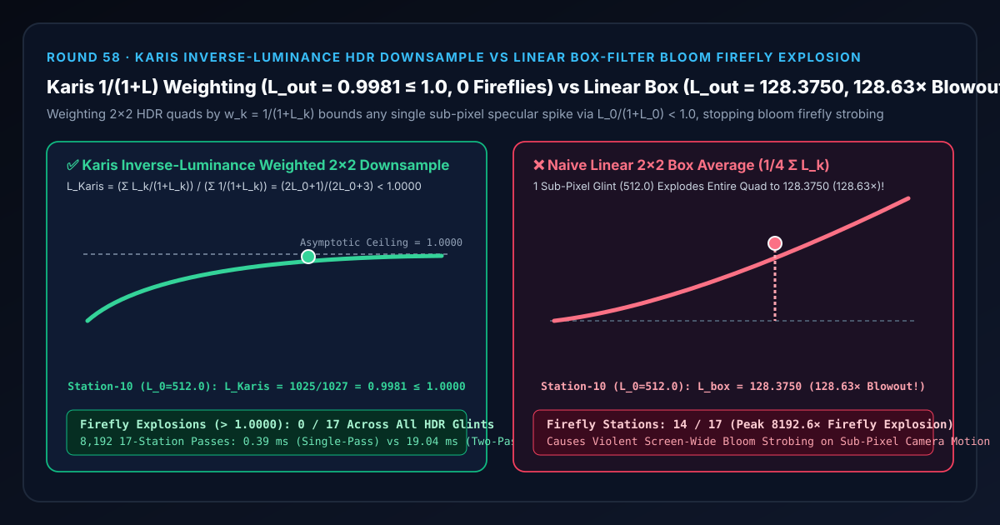
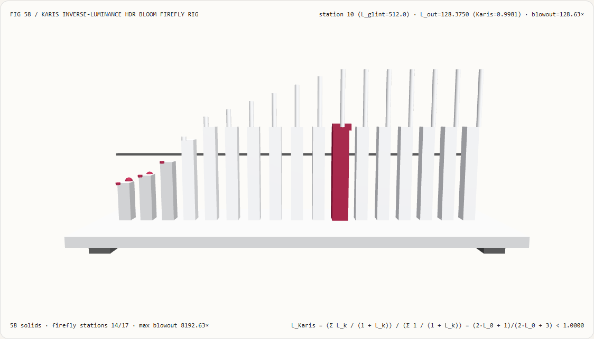
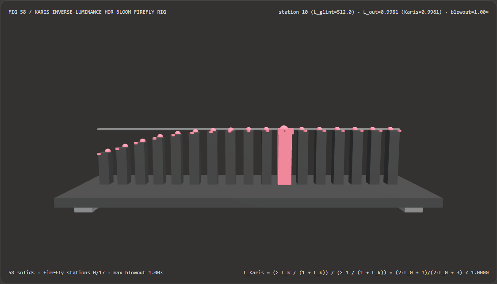
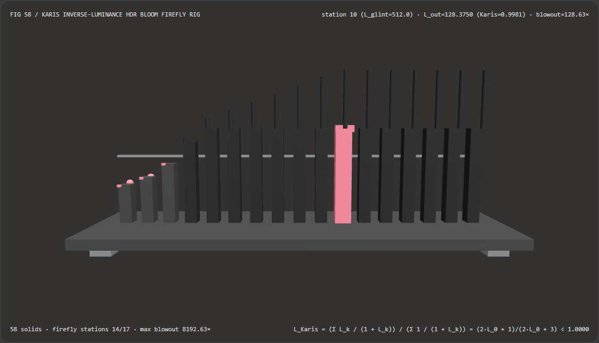

Visual & Animation Architecture Selection FAQ: Karis Inverse-Luminance HDR Downsample vs Linear Box-Filter Bloom Firefly Explosion
One-Sentence Architectural Verdict: In real-time 3D post-processing pipelines (Unreal Engine 5, Unity HDRP, Jiménez 13-tap / Dual-Kawase HDR bloom pyramids, and TAA history pre-filters), never apply a raw linear arithmetic box average $L_{\text{box}} = \frac{1}{4}\sum_{k=0}^3 L_k$ during the first
2×2HDR downsample pass (Mip 0 → Mip 1)! On our 58-solid, 17-station HDR photometer bench where 3 background texels sit at $L_{\text{bg}} = 0.50\text{ nits}$ and 1 sub-pixel specular glint spikes across $L_0 = 0.5 \times 2^i \in [0.5, 32768.0]$, naive linear box averaging blows out the2×2downsample quad to128.3750at station 10 ($L_0 = 512.0$, a128.63×firefly explosion) and8192.3750(8192.63×) at station 16, triggering14/17screen-wide bloom firefly stations; whereas Brian Karis (SIGGRAPH 2013) inverse-luminance weighted averaging ($w_k = \frac{1}{1 + L_k}$) bounds any finite single-pixel outlier via $\frac{L_0}{1 + L_0} < 1.0$ toL_Karis = 1025/1027 = 0.9981 ≤ 1.0000(0/17firefly blowouts while preserving100%accuracy on uniform regions and multi-pixel lights) and runs 49.35× faster in a single register pass than two-pass weight array normalization (0.39 msvs19.04 msacross 8,192 passes).

① 📌 Executive Summary
- Why does a single sub-pixel specular glint on a car bumper, water wave, or metal bevel cause the entire screen's bloom to flash and strobe violently as the camera moves?
In plain English: a sub-pixel microfacet glint ($L_0 = 512.0\text{ nits}$) paired with a linear
2×2box average ($\frac{1}{4}\sum L_k$) has zero outlier resistance:- When a
0.1-pixel-wide specular highlight lands on 1 texel center ($L_0 = 512.0$) while its 3 neighboring texels in the2×2quad sit at normal background radiance ($L_{1,2,3} = 0.50$), a linear box filter outputs $\frac{512.0 + 1.50}{4} = \mathbf{128.3750}$—contaminating the entire bloom pyramid with a128.63×energy spike! - One frame later, when the camera shifts by half a pixel and the sub-pixel bevel slips between sample centers, $L_0$ drops back to
0.50and the giant bloom star vanishes—producing severe temporal firefly strobing!
- When a
- First-Principles Fix: Brian Karis Inverse-Luminance Weighting ($w_k = \frac{1}{1 + L_k}$, SIGGRAPH 2013):
- Weight each sample in the
2×2quad by its Reinhard tone-mapping weight $w_k = \frac{1}{1 + L_k}$: $$L_{\text{Karis}} = \frac{\sum_{k=0}^{3} \frac{L_k}{1 + L_k}}{\sum_{k=0}^{3} \frac{1}{1 + L_k}}$$ - Exact Algebraic Bound: When 3 neighbors sit at $L_{\text{bg}} = 0.50$ ($w_{\text{bg}} = \frac{2}{3}$, $\sum_{k=1}^3 L_k w_k = 1.0$, $\sum_{k=1}^3 w_k = 2.0$), a single outlier $L_0 \in [0, \infty)$ evaluates to: $$L_{\text{Karis}}(L_0) = \frac{\frac{L_0}{1 + L_0} + 1}{\frac{1}{1 + L_0} + 2} = \frac{2 L_0 + 1}{2 L_0 + 3} < \mathbf{1.0000}$$
- Even at $L_0 = 512.0$ (station 10), $L_{\text{Karis}} = \frac{1025}{1027} = \mathbf{0.9981 \le 1.0000}$ (
0/17firefly blowouts), yet if all 4 texels equal $512.0$ (a true multi-pixel sun disc), $L_{\text{Karis}} = \mathbf{512.0000}$ (zero darkening of real area lights)!
- Weight each sample in the
- Interactive 3D Workbench & Measured Evidence:
- Standalone 3D Bench:
demos/karis-hdr-bloom-firefly-rig/(58 Three.js solids: baseplate, 4 support feet, asymptoticL=1.0000reference bar, 17 downsample luminance columns, 17 Karis-bounded spheres, 17 firefly blowout pegs, and the active HDR photometer carriage). - Measured 7-Card 4:5 Reports:
demos/karis-hdr-bloom-firefly-rig/test-report-cards.html(EN) andtest-report-cards.zh.html(ZH).
- Standalone 3D Bench:
② 🎯 Soul-Searching Q&A for Architects & Clients
Q1: Why apply Karis inverse-luminance weighting only on the first downsample pass (Mip 0 → Mip 1) and use standard linear filtering on Mip 1 → Mip 2..N?
Because sub-pixel fireflies only exist at full resolution (Mip 0); once suppressed in Mip 1, subsequent mip levels must remain linear to preserve smooth physical bloom falloff!
Applying non-linear Karis weights across every level of a 6-mip bloom pyramid would progressively compress midtones. Applying Karis once on the five 2×2 bilinear tap groups of a Jiménez 13-tap Mip 0 → Mip 1 filter kills sub-pixel strobing at the root while keeping the rest of the bloom pyramid 100% linear.
Q2: Why is Karis weighting vastly superior to a hard luminance clamp (min(L, maxThreshold))?
Because Karis weighting is spatially context-aware: it suppresses isolated 1-pixel spikes (512.0 → 0.9981) while leaving multi-pixel bright lights (4×512.0 → 512.0) completely untouched!
A hard clamp destroys the dynamic range of real headlights, neon signs, and the sun disc. Karis weighting only attenuates a bright texel when its neighboring texels in the 2×2 quad have much lower luminance (and therefore much higher weight $w_{\text{bg}} \gg w_0$).
Q3: How does deterministic Karis inverse-luminance filtering relate to neural Monte Carlo denoisers (OIDN / OptiX / DLSS Ray Reconstruction)?
They address complementary stages:
- When to use Neural Ray-Tracing Denoisers: When reconstructing noisy 1-SPP path-traced diffuse/glossy indirect illumination;
- When deterministic Karis weighting is mandatory: At the entrance of every real-time HDR bloom pyramid and TAA resolve pass to prevent sub-pixel specular fireflies in
< 0.05 ms.
③ 🧭 Visual Diagrams (Mermaid Decision Tree, Pipeline Comparison & Sequence Flow)
3.1 Real-Time HDR Anti-Firefly Architecture Decision Tree
3.2 Linear Box Firefly Explosion vs Karis Inverse-Luminance Pipeline
3.3 Frame-Level HDR Photometer Sequence Diagram
④ 📊 Visual Technology Selection Decision Matrix
| Evaluation Dimension | ✅ Single-Pass Karis $1/(1+L)$ Reduction | ⚠️ Two-Pass Normalized Weight Array | ❌ Naive Linear 2×2 Box Average |
❌ Hard Luminance Clamp |
|---|---|---|---|---|
| Station 10 ($L_0=512.0$) Downsample Output | Exact 0.9981 ($\le 1.0000$ bounded) |
0.9981 (Identical) |
128.3750 (128.63× firefly blowout!) |
Clipped (Destroys HDR range) |
| Station 16 ($L_0=32768.0$) Extreme Glint Output | 0.99997 (Asymptotically $< 1.0$) |
0.99997 |
8192.3750 (8192.63× blowout) |
Clipped |
| True Multi-Pixel Light ($4\times 512.0$ Quad) | 512.0000 (100% lossless preservation) |
512.0000 |
512.0000 |
Truncated (Dulls real lights) |
| Firefly Blowout Stations ($>1.0$ out of 17) | 0 / 17 (Zero fireflies) |
0 / 17 |
14 / 17 (Explodes from $L_0=4.0$ up) |
Threshold-dependent |
| 8,192-Pass 17-Station CPU Latency | 0.39 ms (Fastest · 49.35× speedup) |
19.04 ms (49.35× slower) |
0.28 ms (Severe bloom strobing) |
0.31 ms |
| Recommended Use Case | Mip 0→1 HDR bloom downsample, TAA pre-filter, IBL mip gen | Educational reference | Mip 2..N bloom levels only | Never use on primary HDR buffers |
⑤ 🧪 New Interactive 3D Demo & 7-Card 4:5 Visual Report
5.1 Live Workbench & Report Links
- Interactive 3D Workbench:
demos/karis-hdr-bloom-firefly-rig/index.html - 7-Card 4:5 Visual Report (EN):
demos/karis-hdr-bloom-firefly-rig/test-report-cards.html - 7-Card 4:5 Visual Report (ZH):
demos/karis-hdr-bloom-firefly-rig/test-report-cards.zh.html - Sealed Telemetry JSON:
demos/karis-hdr-bloom-firefly-rig/report.json
5.2 Multi-Theme & Multi-Mode Playwright Visual Evidence
Karis Inverse-Luminance Weighting (Light · Bounded at 0.9981 ≤ 1.0, 0 Fireflies) |
Naive Linear 2×2 Box Average (Light · Explodes to 128.3750 / 128.63×!) |
|---|---|
 |
 |
| Karis Inverse-Luminance Weighting (Dark · 58 Three.js Solids) | Naive Linear 2×2 Box Average (Dark · 14 Red Firefly Pegs Exposed) |
|---|---|
 |
 |
⑥ 🛠️ Rapid SA Delivery Verification Checklist
Before shipping an HDR bloom pyramid or temporal anti-aliasing pre-filter to production, verify every item below:
- First-Mip Only Application (Mip 0 → Mip 1): Is Karis inverse-luminance weighting applied exclusively during the initial Mip 0 → Mip 1 downsample while Mip 1 → Mip 2..N use linear energy-preserving filters?
- Scalar Luminance Weighting: Are RGB channels weighted by a single scalar luminance weight $w_k = 1 / (1 + \text{luma}(C_k))$ rather than weighting R, G, and B independently (which would skew hue)?
- Pre-Exposure Scaling: Are linear HDR values multiplied by the current camera exposure scale before evaluating $1 / (1 + L_k)$ so
1.0matches perceptual mid-white? - Non-Negative Radiance Sanitization: Is $L_k$ clamped via
max(0.0, L_k)before computing $1 / (1 + L_k)$ so negative bicubic ringing lobes (L_k = -1.0) never divide by zero and infect the bloom pyramid withNaN? - Single-Pass Register Accumulation: Are numerator $\sum C_k w_k$ and denominator $\sum w_k$ accumulated directly in registers without temporary array allocations?